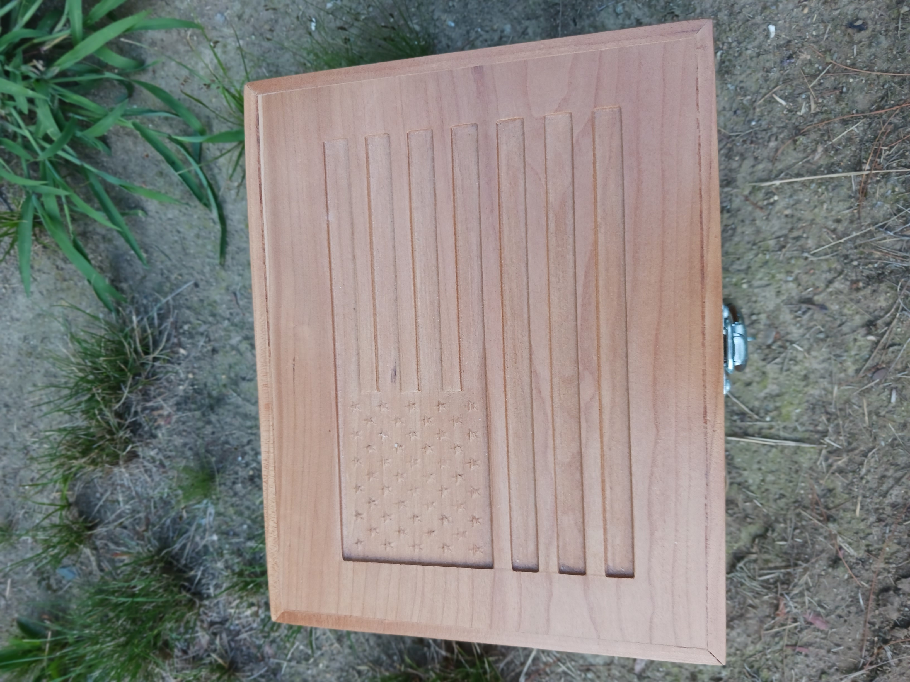
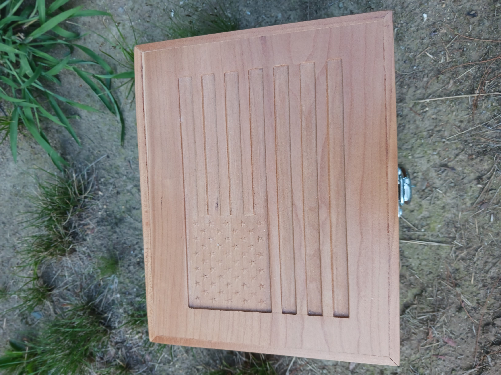

Birdhouse


A handcrafted birdhouse with precision details, perfect for outdoor décor and wildlife enthusiasts.
A handcrafted birdhouse with precision details, perfect for outdoor décor and wildlife enthusiasts.
 

Custom wooden boxes made with quality pine, ideal for gifts or storage with a rustic touch.


Classic adult-sized Adirondack chairs, handcrafted for comfort and outdoor elegance.


A beautifully finished wooden rocking chair, perfect for relaxing on the porch or in the living room.

Sturdy and stylish benches made from quality pine, designed to complement any outdoor or indoor space.